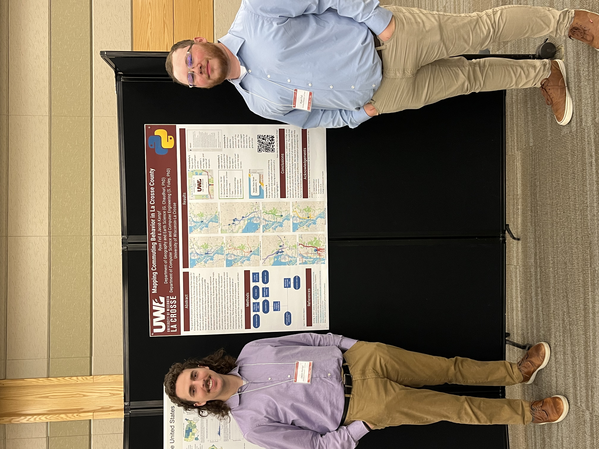

Home
Myself (left) and my research partner Ryan presenting our undergraduate research at the Midwest Undergraduate Geography Symposium (May 2024)
Welcome to my portfolio! This website showcases select projects I have completed during undergraduate and graduate degrees in GIS.